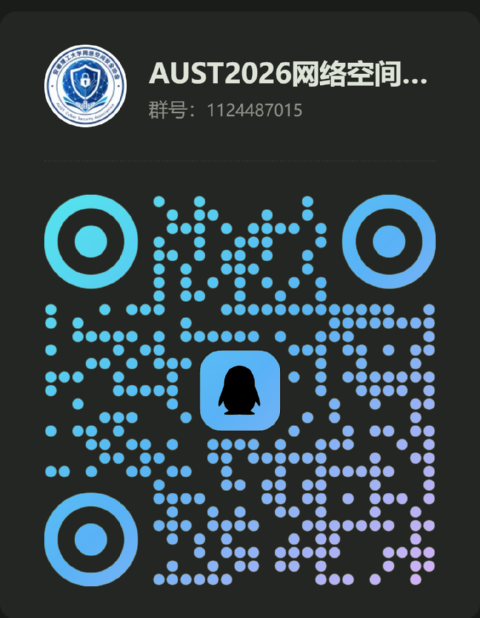
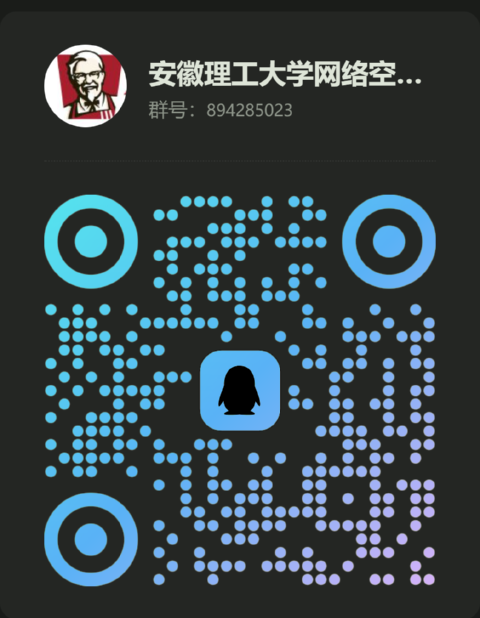

CTF
以赛促学
Web / Pwn / Reverse / Crypto / Misc。从基础题目开始，理解漏洞、程序与系统背后的原理。
安徽理工大学网络空间安全协会
理解它，然后突破它。
滚动或点击右侧刻度继续
01 / 关于我们
这里不只是讨论网络安全。我们会一起刷题、复现漏洞、研究工具、 参加 CTF、接触 SRC，并分享那些很少有人主动告诉你的学习路径与资源。
我们希望减少网络安全学习中的信息差。
EST. 2026 · STARTING FROM ZERO
02 / 我们做什么
以赛促学
Web / Pwn / Reverse / Crypto / Misc。从基础题目开始，理解漏洞、程序与系统背后的原理。
漏洞挖掘
资产发现、漏洞复现、报告撰写。在合法授权的前提下，了解真实的安全研究流程。
技术研究
Web 安全、渗透测试、逆向工程、二进制安全、安全开发，以及 AI × Security 等交叉方向。
信息与资源
比赛信息、学习路线、优质项目、安全社区、工具资源、行业动态。这一块是我们最想做成特色的。
所有漏洞挖掘与测试，仅在合法授权范围内进行。
03 / 从零开始
不知道从哪开始，是大部分人卡住的地方。我们把路径铺在这里。
04 / SIGNAL
网络安全最大的门槛，从来不只是技术，还有信息差。 这些问题我们都会一起整理、一起更新。
我们把这些信息聚在一起。
05 / 加入我们
不会 Linux？不会 C？不知道 CTF 是什么？都没关系。 你只需要对网络安全保持好奇。


扫码加入。校内同学请优先进招新群。